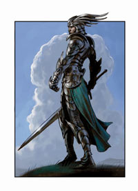

Forums galactiques > Assemblée Galactique : diplomatie officielle > Hime a la joie
| etic Respect diplomatique : 307  19/02 ETU 21:03 | Score : 28 Détails Je ne sais si ce discours est considéré comme du HRP ou du RP mais bon, vu la forme de l?Assemblée à l?heure actuelle qui est devenu un bon vrai forum de discussion HRP, vous en tirerez vous-même les conséquences
Il y a de cela un mois a force de recevoir des HA sur la surface de mon crâne (48OO pour être précis), j?ai décidé de prendre de recul et de me payer des vacances, n?ayant pas la moralité AST, soit de se trouver une baby sister pour gérer mon compte ou plus exactement pour offrir un double compte légal à quelqu?un?.la personne se reconnaîtra tout en laissant un indice c?est la même qui détient Newdeun. Un mois plus tard, vous m?excuserez de ne pas soigner le RP mais devant le peu d?effort des joueurs à le faire, j?en ai perdue l?envie?devant les brillantes idées de Alphonse Hubert qui ne rêve que d?une chose, avoir la possibilité de tuer des Commandants ? je suis rentré de vacance et lui ai offert sa Beta Test via son perso.... il ne m?a pas tuer, mais l?AST a réussi à dégoûter le joueur en recevant des menaces, des insultes des crasha (si cela aurait été possible) par des joueurs dont l?AST a permis de les mettre au rang ?d?élite?.. Élite dans le sens puissance égale avec les vieux Commandants.. En leur permettant de lancer kami et BHA a tout bout de champs.. Mais Newbie dans la tête et les gestes,. Je l?ai toujours dis, l?expérience ce gagne mais ne s?achète pas.. Combien aujourd?hui peuvent lancer une Apocalypse (je ne parle pas en moyen mais en stratégie), de gérer le stress des grandes batailles sans aller pleurer cher le Père Albert (voir Ghozer, dernier inscrit au bureau des pleurs) Doter un Newbie d?une puissance Militaire impressionnante via des kami a foison ou doter d?une puissance scientifique les Alliantistes via des mécanoïdes a foisons, voila le remède AST ? Mon système mère est le système 3 donc extrêmement vieux dans la Galaxie 0, mon level de science est 70? je suis une loque comparé à des Newbies d?à peine un mois ETU.. Tel est la politique de l?AST. Cela est fort bien, aider les Newbies a s?adapter, je l?ai fais moi-même depuis déjà longtemps avec par exemple certain membre du PPG comme le Cdt Deewee ou ses amis ? Mais, donner des kamis a des personnes qui ne connaissent rien a la vie Galactique, qui ne pense qu?a mordre car « j?ai plein de kami », les fait juste tireur a vue, serve de petit chien pour faire se que les Anciennes Elites de l?AST ne peuvent pas faire toutes seules même avec tout l?or du monde car une journée ne dure que 24h, dominer la Galaxie du point de vue militaire.. C?est ceux là même, les toutous, qui viennent vous insulter par MP comme quoi ( je traduis en langage de sourd) que vous êtes de merdes IRLEMENT Parlant. D?où d?ailleurs mon fabuleux MP a l?autre énergumène de sous étage en lui remettant les points sur les i. Je ne me suis pas permis de vous faire partager a tous ma vie intra systémique avec le stressé du calbar. Je ne vous fais pas part non plus de l?autre énergumène analphabète, nul en math (selon ses dires) est j?en passe et des meilleur qui est mille fois meilleur que moi (faudrait déjà qu?il apprenne a écrire en français) . je n?en doute pas un seul instant?et ne veut pas le contrarier mais faudrait qu?il se dé rhume un coup le rectum.. Je peux l?y aider Cette Galaxie ne meurt pas avec moi, cela m?en ferait que trop d?honneur, elle est déjà morte depuis longtemps, ou sont les orateurs d?autrefois, ou sont les beaux RP, ou sont les joutes verbales entre Commandants? disparus avec les Commandants qui les animé (les Anciennes Elites). Je veux parle de mes frères d?arme, Primarque, L?Altlante, Necrid, Overlord, Morcar Boghlir (mais il paraîtrait qu?il est réapparu dans une Galaxie très proche) Mannerheim (mort vivant), Spectror, Kerstan (momifié), Akhenaton, Snake,Nenel, Shaft et les autres Redsamourai (même si je n?étais pas d?accord avec lui), Mac Polar ( le Peignoir pour les Intimes, toujours vivant mais doté d?une trompe actuellement (pure plaisanterie extra galactique), Arietan (justice je vous aime) , la clique chevaleresque Charlemagne, Eghinard, Il ne reste que plus que le Père Albert qui va s?ennuyer a présent, il va être tout seul avec ces toutous, les Ultremes qui eux ont toujours un beau RP dont je félicite et sans oublier la Star du petit écran, le Ancien Elite qui perdure malgré les siècles ETU (peut être car il est déjà quasiment décomposé), j?ai nommé le Grand Imothep (Imomo pour les Intimes). C?est personnes ont fait vibrer l?Assemblée, l?ont fait vivre et lui ont donnée une Ame, un recueil dont j?invite les nouveaux Newbies, non pas à aller dans la Secte AST mais a lire les pages de l?Assemblée, cent fois plus enrichissante niveau experience, Ces Commandant sont pour a présent pour les trois quart, morts? il ne reste que des Newbies kami transformés en fédé fêlé? Je vous tire ma révérence, je ne reviendrais plus en ces lieux, même si je ne fais pas de courbette devant les AST de lopettes. J?espère que Dieu lira se post et prendra les mesures adéquates, c'est-à-dire, mettre un test QI a l?entrée de cette Galaxie, « trois boules dans un panier, trouver la boule rouge parmi les trois boules noirs? » HRP : Et je suis sure que certains ont hésité.. D?ou le problème Etic Ps : je n?ai point cité certains Commandants de ma ligné d?ANTI AST (toutes les places sont prises, désolé nous ne sommes pas 6O), qu?ils m?en excusent, cela était volontaire | ||
| Mannerheim Respect diplomatique : -10  20/02 ETU 00:12 | Score : 5 Détails jseb serait autre chose qu'un petit roquet hargneux, la voix de son maître, il saurait qu'Etic, perdu dans les confins orientaux, nous écrit au moyen d'un clavier à pictogrammes, je le défie dans ses conditions de faire mieux.
------------------------------------------------------------ Etic, vous avez été l'un des rares à me faire vraiment apprécier la vie galactique, vos talents de médiateur ( qui sont à l'origine de notre alliance et de notre amitié ) n'ont eu d'égale que votre loyauté dans les moments les plus sombres. La coalition des médiocres semble l'avoir emporté mais lorsque tous les grands arbres tombent, les fougères meurent juste après. Mes pensées vous accompagnent | ||
| etic Respect diplomatique : 307 20/02 ETU 02:49 | Score : 12 Détails Salutation à tous. C'est moi le tristement célèbre commandant Nenel. Je vous passe un petit message alors que je suis actuellement en vacance. Ce message sera teinté également d'une note de HRP car je pense qu'il y a des choses qui doivent être dîtes.
J'ai pour ma part décidé de partir en vacance après plusieurs évènements qui m'ont quelque peu dégoûté du jeu. Premièrement des messages complètements HRP publié par Le Pape afin de discréditer. Je m'étais longuement prononcé là-dessus mais cela m'a profondément énervé de voir que des joueurs arrivaient à ce point là afin de pouvoir démonter un personnage. Deuxièmement l'agissement de Necrid, qui alors qu'il avait toute ma confiance, s'est amusé à dire lors d'une soirée d'apocalypse IRL qu'il possédait mon mdp et s'est amusé à balancer des infos sur mon compte pour faire le malin. Par la suite il m'a bloqué de msn et ne m'a plus jamais reparlé, alors qu'on passait énormément à discuter ensemble et je le considérais comme un ami. Trahison IRL, ça fait mal. Enfin entendre que lors de cette même soirée on se fait traiter comme une merde par certains joueurs. J'ai apprécié le petit surnom de Neuneu, donné par Alphonse. Cela vous pousse à prendre du recul et à aller voir ailleurs. Mais ceci n'est pas l'objet de ma visite. Il y a peu je me suis dis que j'allais sans doute revenir, car j'avais pris du recul, tout ceci était quelque peu oublié, et je me suis dis que apo me manquait. J'ai donc aidé Etic dans son retour en attendant mon retour de vacance. Mais quelle désolation en regardant l'état de l'Assemblée. Il n'y a plus de RP, plus de message de plus de 10 phrases, plus de background, plus d'histoire, plus rien du tout. Ce qui faisait la beauté d'apo s'est envolé. Ce qui m'attirait le plus ici a disparu. Pourquoi cette situation ? D'après moi, l'AST est en partie responsable. Avant quand on était un petit commandant et qu'on arrivait sur apo, on restait discret, on était respectueux, on faisait des efforts pour parler, pour se faire des alliés. On devait tout faire si on voulait s'en sortir et rattraper les plus gros. Maintenant, l'AST transforme un nouveau commandant en machine de guerre. Cette phase de découverte, de formation au RP n'existe plus. C'est bien dommage. Ensuite, il y a certains vieux commandants qui ne font également aucun effort. AlphonseHubert par exemple. Tu es là depuis la béta1, mais tu es entrain de pourrir de plus en plus cette Assemblée. Tu ne fais plus de RP, tu te contentes d'être agressif envers tout le monde, en faisant des petites phrases de « merde ». C'est décevant de ta part. Tu ferais mieux d'essayer de tirer la galaxie vers le haut, au lieu de la faire couler. Hum, désolé, si c'est un peu agressif, mais c'est pour te faire réagir, tu as un potentiel RP, exploite le et montre leur l'exemple. Maintenant vous pouvez penser ce que vous voulez, peut être que vous prenez du plaisir ici même, peut être que cette galaxie vous plaît, c'est votre choix. Moi je n'y remettrai pas les pieds tant que vous ne ferez pas d'effort. Je salue également tous mes camarades avec qui j'ai passé de bon moment, je ne vous oublierai pas. Cordialement, Nenel | ||
| Thorn Respect diplomatique : 141  20/02 ETU 08:35  | Score : 1 Détails On sent la lassitude dans ce discours, il est temps de passer à autre chose...
Dommage que toute cette amertume se traduise par tant de mépris. C'est vrai, avant c'était mieux! C'est toujours mieux "avant". C'est toujours mieux lorsqu'on domine... C'est toujours moins bien lorsque de nouvelles forces, de nouvelles énergies, de nouvelles motivations arrivent et qu'un beau jour vous vous réveillez prennant conscience que vous êtes dépassé... Bien entendu, je condamne au plus haut point, l'attitude de certains Commandants ne sachant pas se maîtriser, mais ce n'est pas une raison pour faire cet olla-podrida... Si vous estimez être exemplaire, quittez donc la Galaxie de manière exemplaire, mais pas en insultant ceux que vous connaissez si peu, enfermé que vous semblez être dans votre TOUR de CERTITUDE... | ||
| dechiketeur Respect diplomatique : 286  20/02 ETU 09:27 | Score : 11 Détails *Dechiketeur, adossé à une colonne, écoutait les discours de Nenel et d'Etic. Il n'était pas dans la galaxie depuis longtemps mais, comprenait ces discours touchants.
Lorsque Thorn prit la parole, une envie de meutre l'envahi, le coeur battait derrière cette armure de mépris et de rage, le coeur rempli de foi envers ces puissant de toujours. C'es puissants qui lui manquaient de par leurs discours sensationnels. A la fin du discour de Thorn, il se décida à aller prendre la parole afin de réagir et faire réagir, comme à son habitude. Mais adossé à la colone, il regarda les commandants présents. Plusieurs 'entre eux s'en foutaient, d'autres triste de par la vérité de leurs propos, et des sièges vides. Les sièges des "condannés". Ces hommes qui se voilent la face afin d'oublier leurs erreures, et de rester dans le mouvement. Ce mouvement de guerre, sans aucune réflexion. Le monde tourne autoure d'une chose, la guerre entre l'AST et les Ultrèmes. Si on tente de prendre une planète, on a affaire à l'un des deux camps, qui lorsqu'ils se tapent dessus, ne font que démontés les commandants innocents ou indépendants. Le monde n'est plus. Dechiketeur se mit la main gauche sur les yeux et frotta, une aide pour stimulé sa pensée. Non, il ne voyait rien d'autre, pas d'autres options, aucune solution. Si, une solution. la lassitude. Le seul moyen de pouvoir changer est de voir l'autodestruction de tout ces commandants menant les affaires de la galaxie. Il ne pouvait se résoudr à cela. "C'es trop nul !" dit il à voix basse Il se redressa avec un petit appui sur la colone. Croisa ses mains, atendit quelques secondes, observa l'assemblée, les orateurs. Puis il se résigna à aller prendre la parole. Il avança d'un pas lent et régulier, chacun de ses pas résonnaient dans la pièce, il décroisa ses bras. Mit la première main sur le pupitre centrale, puis la seconde.Il adapta le micro à sa hauteur. Il eut un silence pendant lequel il rassembla ses esprit afin de préparer son discour. Puis dressa sa tête rouge vers l'assemblée et dit: Commandant Thorn, Vous faaites parti de l'AST. Donc de la coalition que "dénonce" le commandant Nenel. Or il me semble que vous ne faites pas preuves de réflexion envers ces belles paroles. Vous vous engouffrez dans un hors sujet des plus minables et des plus stupides. Connaissez vous les commandants etic et Nenel ? Les avez vous jouir de leurs expressions dans ce lieu ? Avez vous, ne serait-ce comprit ce que ces commandants disent ? A ces questions, la réponse ne tient qu'en un mot: Non. Vous ne les connaissez pas, vous ne écoutez que les discours (topics) de premiers lieu ( première page). Allez donc jettez un oeil dans les archives de l'assemblée, ensuite seulement vous pourrez dénoncez, si vous y voyez une seule chose à dénoncez." Dechiketeur rengainat sa rage, et préfèra la garder pour le combat, Si un jour il y en aurait un, un qui le concernerait; un pour lequel il resentirait le besoin de se battre. Il quitta la pièce les mains dans le dos avec ce même pas que pour prendre la parole, se pas de tranquillité, et de raison.* | ||
| Thorn Respect diplomatique : 141 20/02 ETU 10:12 | Score : -5 Détails Le Commandant Thorn laissa l'excité frétiller comme un poisson sans oxygène et rétorqua.
Il y a trop de poussière dans les archives et j'y suis allergique. | ||
| kuririn Respect diplomatique : 10  20/02 ETU 10:31 | Score : 5 Détails Le petit commandant qui a suivi le conseil de dechiketeur ,et qui est aller lire les anciens sujet de discution de l'assemblée (ancien mais très bien écrit) se leve et répond:
Si vous avez la "flemme" d'aller voir qui était les grands commandants, ne les critiquer pas sans savoir qui ils étaient et se qu'ils ont fait avant. puis se rassit en ajoutant que maintenant,il y était aller et qu'il n'y avait plus de poussière... Cordialement Kuririn. | ||
| Empire Kilrathi Respect diplomatique : 63  20/02 ETU 10:43 | Score : 5 Détails Tout comme l'a fait remarquer Etic, on peut remarquer que les astrèmes ne font que réagir en insultes, sans écouter ce que l'on peut dire, se contentant de camper sur ses positions sans faire aucune consession, et en distribuant les points négatifs à ceux avec qui ils sont en désaccords... C'est pitoyable...
Peut-être serait-il temps que "la plus grande organisation démocratique" de la galaxie prenne conscience qu'elle n'est pas seule ici. Que d'autres commandants souhaiteraient profiter de ce que l'univers a à offrir, sans pour autant devoir subir les assault et les insultes d'analphabêtes surarmés... | ||
| Thorn Respect diplomatique : 141 20/02 ETU 10:49 | Score : 4 Détails Le Commandant Etic commença son discours sur d'étranges paroles, je cite:
--Je ne sais si ce discours est considéré comme du HRP . Avec son expérience "d'Ancien" il devrait commaitre les us du Tribunat. Dans mon esprit cela ne signifie pas qu'Ancien soit synonime d'insulte. S'il est las, qu'il se repose... MAIS, ce n'est pas une raison pour insulter les jeunes Commandants sous l'unique pretexte qu'ils sont AST... Je n'aime pas me laisser traiter de "toutou".. | ||
| Amon Tobin Respect diplomatique : 32  20/02 ETU 11:04 | Score : 7 Détails Amon Tobin, toujours tapis dans l'ombre baissa la tête d'indignation. Peut être que certains commandants devraient ce remettre en question...
| ||
| AlphonseHubert Respect diplomatique : 690  20/02 ETU 11:40 | Score : 9 Détails Puisque le HRP semble être à la mode, je vais y aller de mon commentaire aussi, bien que je pense que ces considérations n'aient rien à faire ici.
Je suis arrivé dans la Galaxie version 1 juste au moment de la mort de Mac Polar et Fregger, alors les deux joueurs les plus puissants, vers Avril 2005. Les premiers discours que j'ai entendus alors, c'était déjà les mêmes qu'aujourd'hui : la Galaxie est morte, plus aucun RP, les joueurs ne seront plus jamais à la hauteur etc. A l'époque, j'ai naïvement cru que j'avais effectivement probablement raté l'Age d'Or, celui où tout était beau tout était magnifique. Mais depuis, à chaque fois qu'un bouleversement arrive dans la Galaxie, j'entends la même rengaine, venant des uns ou des autres, souvent des mêmes, sur la "Galaxie qui tombe", sur la "mort du RP", sur la fin du monde... Souvenons-nous à ce propos qu'on commençait déjà à parler du déclin de Rome avant César, et qu'à force d'en parler et d'en devenir obsédé, eh bien, on y est effectivement arrivé des siècles plus tard. Car le moyen le plus sûr de tuer le RP, c'est de faire des grands discours HRP pour le sauver. Alors, si vous voulez mon avis, et que vous voulez sauver le RP : soyez exemplaires. Combien de fois ai-je balancé de grands discours dans le vide qui n'ont jamais reçu de réponse ? Est-ce que ça m'a empêché de continuer ? Je signale à ce propos pour Nenel qu'il n'est pas besoin de faire des discours grandiloquents de douze pages pour être RP : une phrase d'Imothep sur ses bandelettes qui se détachent, c'est court, mais c'est RP, un "garkuiiik" d'Ultremis suivi de la traduction de ramouflon, c'est court, mais c'est RP, et une phrase d'AlphonseHubert sur les anciennes élites, c'est court, mais c'est aussi RP. Aussi, Nenel, je ne te permets absolument pas de juger mon RP : tu ne connais pas, n'as jamais connu et ne connaîtras probablement jamais le joueur derrière AlphonseHubert, mais je peux t'assurer qu'il a créé un personnage AlphonseHubert, et qu'il ne répond jamais en fonction de ce qu'il a envie de dire, mais en fonction de ce qu'AlphonseHubert aurait dit. J'ajouterai, pour être très court, que je trouve vos discours incroyablement méprisants et condescendants. Vous n'avez aucun droit de vous prendre pour les seuls à avoir compris le jeu, vous n'avez aucun droit de prétendre donner des leçons, surtout pas sur ce ton-là, à tout le monde. Faire passer un test de QI à l'entrée de la Galaxie ? Je n'en reviens toujours pas... vous vous êtes lus ? Vous avez vu pour quoi vous vous prenez ? Ce n'est même pas le personnage que vous insultez, c'est le joueur !! Alors, je pense qu'effectivement, il ne vous reste qu'une seule alternative. Soit, vous revenez avec un RP et sans cette condescendance, soit vous ne revenez pas. Je terminerai sur une note personnelle en disant qu'à mon avis, on reconnaît les grands joueurs à ce qu'ils ne se sentent pas obligés d'insulter tout le monde avant de s'en aller. Après vous le déluge ? Soit, on apprendra bien à nager tous seuls. | ||
| darksith Respect diplomatique : 170  20/02 ETU 11:50 | Score : 7 Détails Le commandant darksith entra dans la salle...
D'un pas vif, il alla trouver sa place et se fit informer du débat d'aujourd'hui. Après la lecture rapide d'un hologramme, il embrassa l'Assemblée du regard... Il se leva, réclamant la parole. "Manifestement, certains commandants font preuve d'une étroitesse d'esprit à tout épreuve..." Il prit le temps de peser ses paroles... "Alors que certains commandants préparent leur discours et réfléchissent mûrement à ce qu'ils vont dire, d'autres en revanche ne prennent pas le temps de considérer la totalité des interventions et ne relèvent que le superficiel du message. Ainsi, ne prenant pas le temps de lire entre les lignes, ils se sentent attaqués, insultés. On pourrait penser que leur réplique serait construite et constructive, mais non!" Il tambourine du poing sur la table... "Non, ils se complaisent dans la superficialité et se contentent de crier à l'insulte, sans chercher à donner des idées constructives..." Le commandant darksith s'interrompit. Il regarda à nouveau l'Assemblée... Il s'appreta à reprendre la parole, mais se ravisa... A quoi bon discourire pour n'être entendu que par ceux qui ont les mêmes idées... Il se rassit et attendit... | ||
| Shoubenigourath Respect diplomatique : 119  20/02 ETU 12:09 | Score : 4 Détails Hum... Cher Alphonse Hubert ;
La différence entre notre assemblée d'aujourd'hui et le RP de, par exemple, l'époque de la guerre entre l'Aigle Sombre et le Contrebandier est flagrante. C'est un fait. Le RP se réduit en peau de chagrin au fur et a mesure que le respect disparait. Le respect qui était notre raison de vivre, le respect de l'autre et de ses pensée a disparue en laissant sur place que mensonge et malhonneteté. On ne peut batir un civilisation, un jeu, un monde sur du mensonge et des attaques. Même si l'on le souhaitait. Ne serait-ce qu'entre l'époque de la prise de Newdeun par Necrid et aujourd'hui, la différence est visible. Elle est non seulement visible, mais aussi vu : la preuve par Etic et Nenel. Pourquoi cela, se demande les mieux informé ? Parcequ'il y a la guerre, déjà. La guerre qui détruit tout sur son passage, qui attise haine et violence et que l'AST a démarré. Mais il n'y a pas que cela. Il y a aussi les hordes (hordes est un bon mot) de jeunes commandants qui se croivent mieux que les autres. Il y en a toujours eu, de ces meutes affamé, il y en aura toujours eu. Mais avec le systéme de l'AST, ces jeunes commandants peuvent continuer de cracher sur tout le monde en toute impunité, peuvent continuer de braver et de crier sans aucun problème. Nous ne pouvons construire lorsqu'il est rendu si facile de détruire. | ||
| Shiloh Respect diplomatique : 16  20/02 ETU 12:11 | Score : 5 Détails Shiloh, suivant Darksith de très près lors de son arrivée, l'écouta parler, et fut du même avis que le commandant.
Il lui dit à l'oreille : "Mais au fond de vous, que pensez-vous du sujet du débat ? " Et il attandit la reponse jusqu'a se que Darksith répondis. Sur ce débat, je ne donnerais pas mon avis, je ne suis qu'un jeune commandant inexpérimenté! | ||
| Shiloh Respect diplomatique : 16 20/02 ETU 12:12 | Score : 2 Détails le dernière phrase de mon premier message n'étant pas la réponde de Darksith ! ( il s'agit de mon avis personel et non de le reponse de se commandant! )
| ||
| ultremis Respect diplomatique : 98  20/02 ETU 12:20 | Score : 9 Détails Je vais etre court :
La galaxie se fou royalement de vos etats d'ames personnelles ! yen a vraiment marre de ces discours mi RP et mi HRP ! Dans l'assemblee vous n'avez pas a vous juger les uns les autres ! VOUS ETES UN PERSONNAGE ET VOUS ATTAQUEZ ET DEFENDEZ DES PERSONNAGES ! C'est normal de juger le rp mais vous en parlez a vos amis irl ou alors vous la fermez! j'en peux plus de voir ce genre de message merdique sur l'assemblee ! Sur le fond c'est le premier facteur qui tue le jeu, apres vous discuterez sur la forme des discours a tenir ! Alors vous arretez de vous lamentez en penssant au passé, ya eu de belles epoques pour les discours meme ressament comme le combat electoral entre l'ast l'ulg et le partie d'imothep lors des premieres elections; yaura d'autres belles epoques mais en attendant la galaxie est ce qu'elle est et si vous etes pas content et que vous voulez critiquez ben vous vous cassez c'est plus simple! Je demande qu'il yai un comité de censure du HRP ! Qu'on foute a la poubelle ces messages a la con et qu'on recommence sur de bonnes bases! | ||
| Shoubenigourath Respect diplomatique : 119 20/02 ETU 12:24 | Score : 0 Détails Je suis d'accord ! Commençons donc par Alphonse.
| ||
| Thorn Respect diplomatique : 141 20/02 ETU 12:26 | Score : 0 Détails Commandant Ultremis.
Votre message est adapté, j'en conviens. Mais je trouve dommage que vous adoptiez un "style" que vous critiquez à juste titre. | ||
| etic Respect diplomatique : 307 20/02 ETU 12:43 | Score : 8 Détails Regard sombre et narquois devant l'ironie est le mauvais esprit de Bebel le Mal Aimé
Mes demandes sur le test de Q.I cher Bebert, demandaient simplement a Dieu (non pas Admin) de voir si les nouveaux Commandant (Newbies) qui ont ou vont grossir vos rangs sont assez intelligent pour savoir et pouvoir lancer des BHA ou utiliser des kami car doter par vous de ces armes dès leurs arrivées.. Aucune autre forme de narcissisme de ma part n'était a déplorer mais là encore, vous ne vous posez pas les bonnes questions et vous vous sentez attaquer continuellement. Il faut arreter de se prendre pour le centre de la Galaxie, tout le monde ne craquote pas au Heudeubert le matin, moi je prends des Pankaques par exemple, c'est plus energique et plus consistant. Je suis navré de vous dire cela cher AH, mais vos lacets sont défais.. Vent et tempete ne survinrent pas, cape et épée enfourchée, le pas legé, il s'en alla | ||
| ultremis Respect diplomatique : 98 20/02 ETU 12:43 | Score : 3 Détails Commandant Ultremis.
Votre message est adapté, j'en conviens. Mais je trouve dommage que vous adoptiez un "style" que vous critiquez à juste titre. de koi vous parlez ? de quel style ai je parlé ? je n'ai pas bien compris soyer plus explicite ... |
Forums galactiques > Assemblée Galactique : diplomatie officielle > Hime a la joie